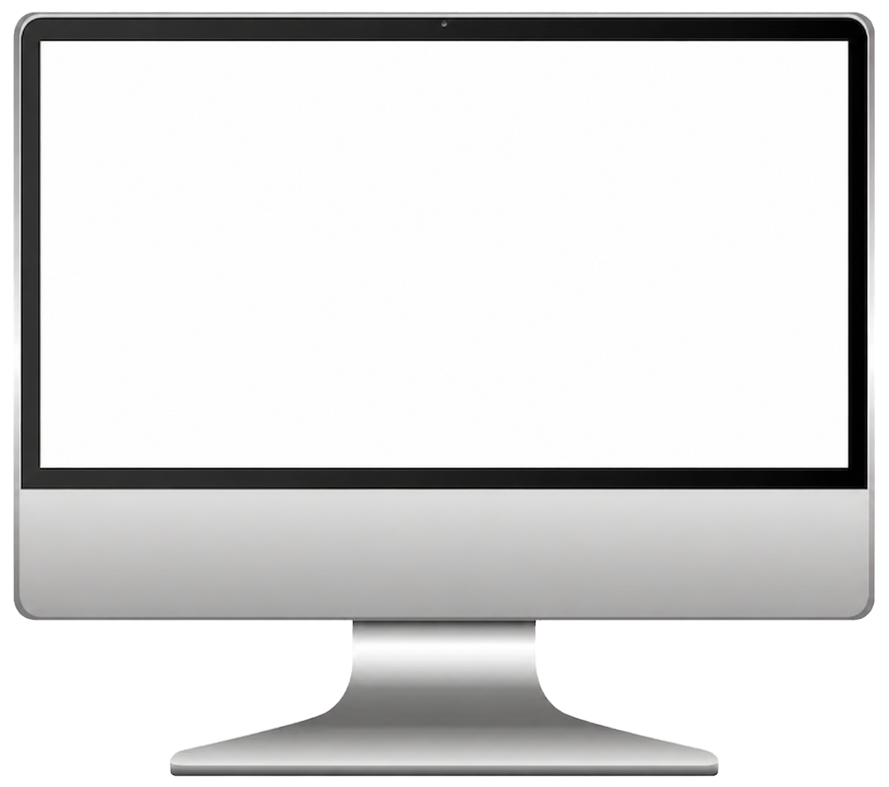

01 · WEB DESIGN
Hotels Pick
호텔스픽 메인페이지 리디자인
호텔스픽의 메인페이지 리디자인을 위해 기업 측과 조율하며 디자인 기획부터 와이어프레임 설계 및 HTML 구현까지 진행했습니다.
DESIGN INTENT검색과 추천 콘텐츠의 우선순위를 정리하고, 서비스의 주요 행동이 명확하게 전달되도록 화면 구조와 탐색 흐름을 개선했습니다.
- TYPE
- Hotels Pick 메인페이지 디자인
- SCOPE
- PC 메인페이지 리디자인
- ROLE
- 디자인 기획 · 와이어프레임 설계 · HTML 구현
- TOOLS
- Figma VS Code HTML/CSS JavaScript Codex Claude